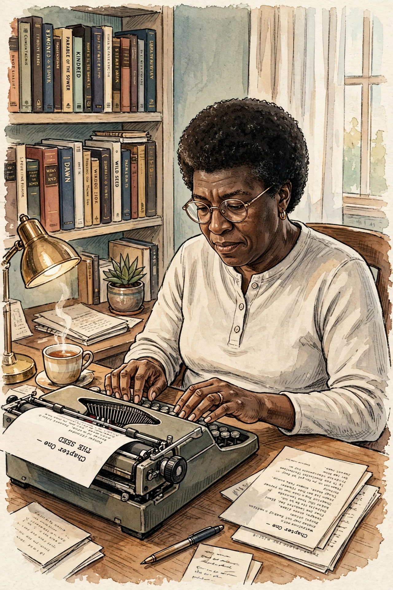

| Octavia E. Butler | |
|---|---|
| Born | Octavia Estelle Butler, June 22, 1947, Pasadena, California |
| Died | February 24, 2006, Seattle, Washington |
| Occupation | Novelist, short story writer |
| Genre | Science fiction |
| Notable works | Kindred, Parable of the Sower, Dawn, "Bloodchild" |
| Awards | Hugo Award, Nebula Award, MacArthur Fellowship (1995) |
Octavia Estelle Butler (June 22, 1947 – February 24, 2006) was an American science fiction author. A multiple recipient of the Hugo and Nebula awards, she became in 1995 the first science fiction writer to receive a MacArthur Fellowship "Genius Grant." Her work explores power hierarchies, race, gender, empathy, and humanity's drive toward hierarchy and violence.
Butler was born in Pasadena, California, and raised by her mother, a maid, after her father's early death. Shy and mildly dyslexic, she found refuge in libraries and began writing stories as a child. After attending the Clarion Workshop in 1970, where Harlan Ellison encouraged her work, she supported herself with menial jobs while publishing the Patternist novels beginning with Patternmaster (1976).
Her breakthrough novel was Kindred (1979), in which a Black woman is transported between 1970s California and a slaveholding Maryland plantation. The Xenogenesis trilogy (Dawn, Adulthood Rites, Imago) imagines gene-trading aliens remaking humanity after nuclear war. Parable of the Sower (1993) and Parable of the Talents (1998, Nebula Award winner) follow Lauren Olamina, founder of the Earthseed faith, through a climate-ravaged America. Her short story "Bloodchild" won both the Hugo and Nebula awards. Butler died in Seattle in 2006; in 2018 she was inducted into the Science Fiction Hall of Fame, and Parable of the Sower became a New York Times bestseller in 2020.
See also: Kindred, Parable of the Sower, Afrofuturism.